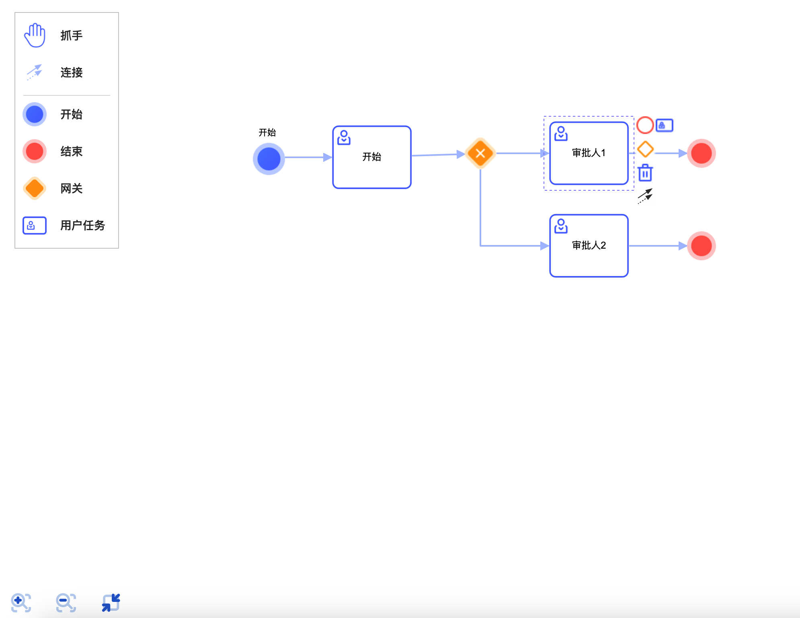
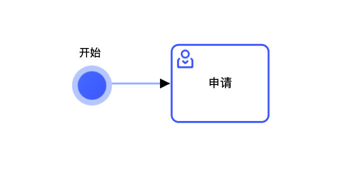

【引言】最近一段时间的工作重点在审批流和低代码平台，审批流的话，最开始是使用 Bpmn.js 去构建前端的流程图；使用了一段时间后，也算是得心应手，踩过很多坑，也淌平了很多恶心的需求吧，趁此机会总结一下。
基本上 bpmn 原有的元素从 UI 到功能上面都会有所更改，从左侧元素工具栏到中间的元素，连接线，元素的面板，基本上都要重新覆盖。
最终效果如下：

【正文】任务节点更换皮肤后，文字不显示或者文字不居中问题
最开始想到的解决办法是手动处理每个sharp的样式，手动把 x,y,font-size,fill 给填上，这么做虽然可行，但是每个sharp的坐标，位置，大小，文字长度都得计算，觉得这并不是一个好方案，然后翻阅了 bpmn.js 的源码，看了他的实现，觉得可以在自定义这块重新在调用就可以了，实现如下代码:
1
2
3
4
5
6
7
8
9
10
11
12
13
14
15
16
17
18
19
20
21
22
23
24
25
26
27
28
29
30
31
| import TextUtil from 'diagram-js/lib/util/Text.js';
import { assign } from 'min-dash';
const defaultStyle = assign({
fontFamily: 'Arial, sans-serif',
fontSize: 12,
fontWeight: 'normal',
lineHeight: 1.2
});
const textUtil = new TextUtil({
style: defaultStyle
});
const elementStyle = {
size: {
"width": 100
},
box: {
"width": 100,
"height": 80,
"type": "bpmn:Task",
},
align: "center-middle",
padding: 5,
style: {
"fill": "black"
}
}
const text = textUtil.createText(element.businessObject.name, elementStyle);
svgAppend(parentNode, text);
return text;
|
分支箭头更换皮肤后，箭头不变化

监听bpmnModeler变化时，执行如下代码即可
1
2
3
4
5
6
7
8
9
10
11
12
13
14
15
16
17
18
19
20
21
22
23
24
25
| setArrowColor() {
const marker = svgCreate('marker')
svgAttr(marker, {
id: 'sequenceflow-arrow-normal',
viewBox: '0 0 20 20',
refX: '11',
refY: '10',
markerWidth: '10',
markerHeight: '10',
orient: 'auto'
})
const path = svgCreate('path')
svgAttr(path, {
d: 'M 1 5 L 11 10 L 1 15 Z',
style:
' stroke-width: 1px; stroke-linecap: round; stroke-dasharray: 10000, 1; '
})
const defs = domQuery('defs')
svgAppend(marker, path)
svgAppend(defs, marker)
}
|
1
2
3
4
5
6
7
8
9
10
| #sequenceflow-arrow-normal {
fill: #ACC2FF !important;
stroke: #ACC2FF !important;
}
.djs-connection {
path {
stroke: #ACC2FF !important;
marker-end: url(#sequenceflow-arrow-normal) !important;
}
}
|
一些元素的显隐问题
因为 bpmn.js 是通过svg实现图形功能的，所以简单的是绝大部分的元素的隐藏都可以通过 css 来处理，只有少部分需要自行操作svg的属性。
svg的添加、删除、增加属性等功能
可以使用内置的tiny-svg这个库来解决，结合min-dom和min-dash其实能解决好多关于svg的问题，都是一些很简单也很好用的库，地址：
【结束】总的来说，学习和使用 bpmn.js 虽然看上去有一定的难度，但其实多尝试，就能够掌握这个工具，并且可以在其中实现自己的需求。网上的相关资料、源码以及API接口都比较详细，并且开发者的社区也非常活跃，所以我们可以尝试寻找适合自己的解决方案，并且不断尝试和探索最佳的使用方式和技巧。